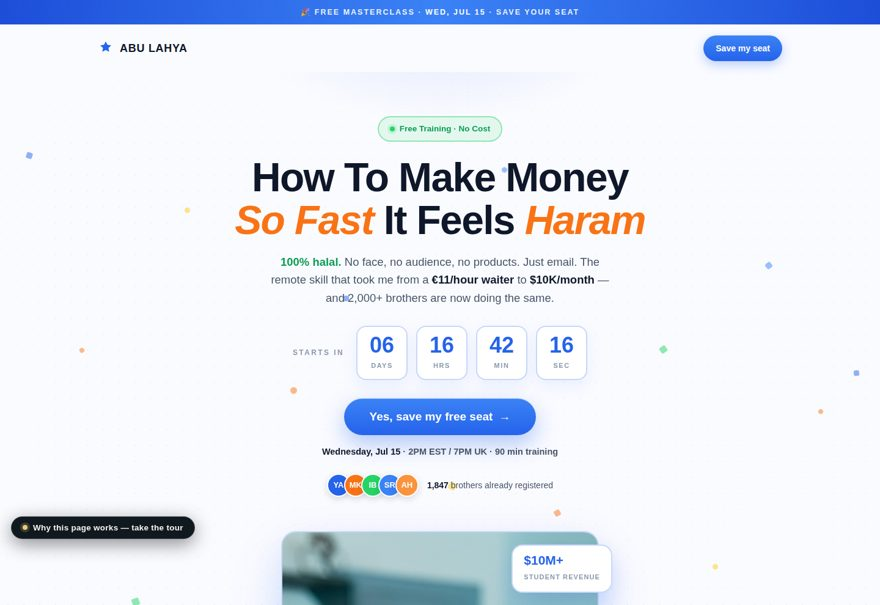
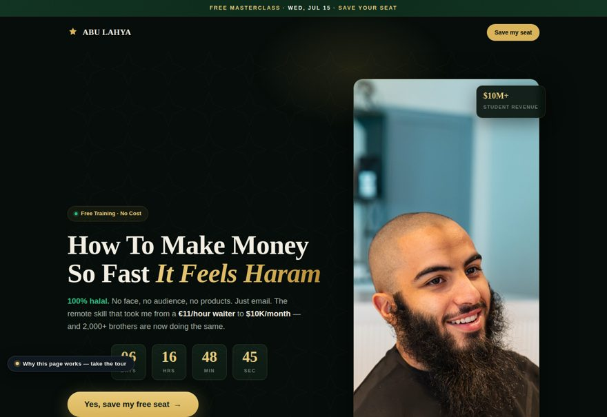
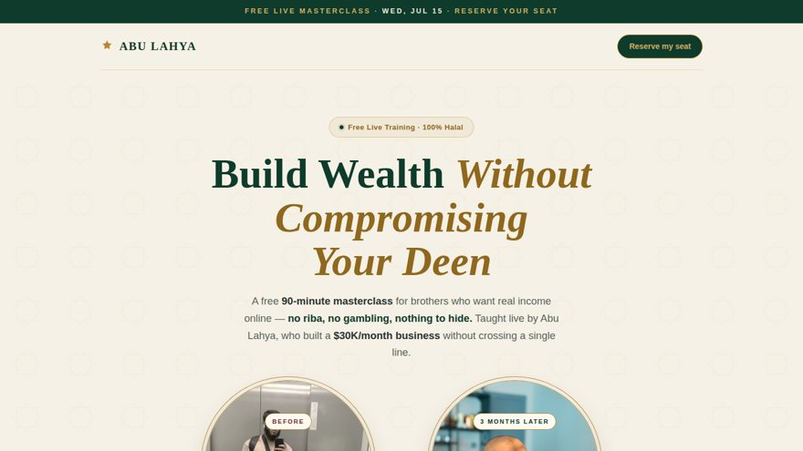

Variant 01
Flashy — Funnel Native
Loud, bright, DTC-webinar energy. Matches the brand language of the funnel's existing confirmation page — blue, orange, confetti — so ad → lander → confirmation feels like one product.
Open page →Tour: ?tour=1

Variant 02
Premium — Private Bank
Dark emerald and gold, serif display type. Positions the masterclass as high-trust and high-value — built to pre-frame a $4K–$7K program, not a freebie webinar.
Open page →Tour: ?tour=1

Variant 03
Heritage — Andalusian
Ivory, deep emerald and gold with Islamic geometric ornament. Speaks the audience's identity with reverence instead of hype — the anti-guru aesthetic for a skeptical, faith-first niche.
Open page →Tour: ?tour=1